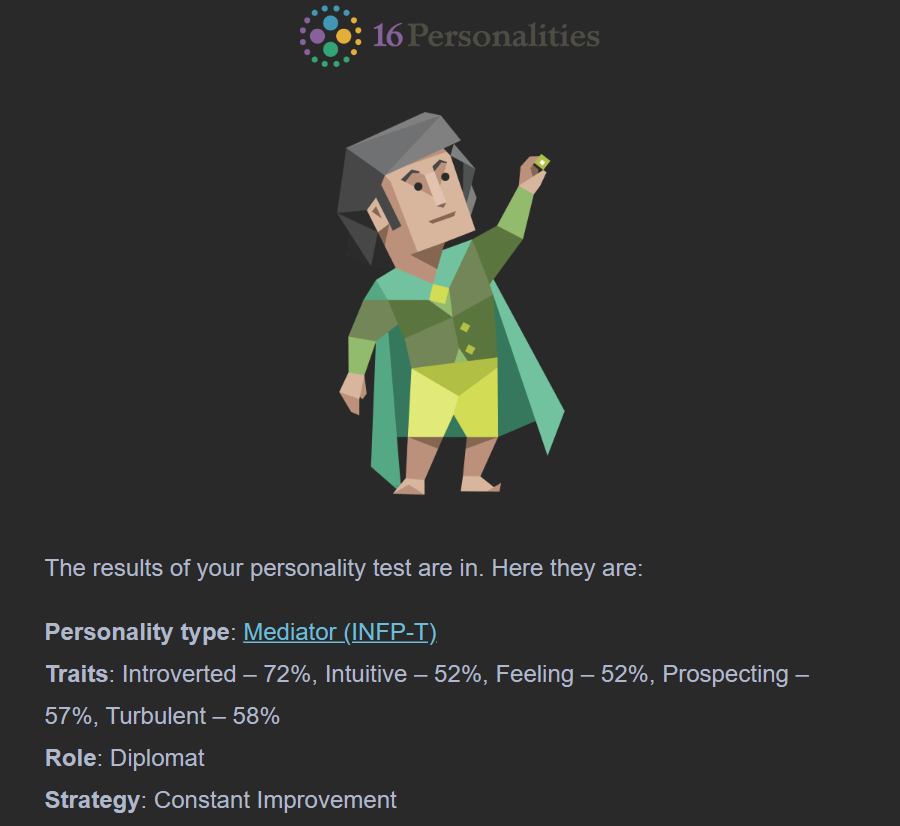

My name is Xiao Fan, I am a PhD student in Biomedical Engineering at University of Saskatchewan. My research is focused on developing machine learning, image processing, and biomedical methods to improve image segmentation for hydrogel scaffolds so for better non-dructive 3D characterization. My research mainly takes place at the BMIT beamlines of the Canadian Light Source and I have used the CLS beamlines for unique imaging techniques i.e., phase-contrast imaging, helical CT, and dynamic CT. Prior to coming to Saskatchewan, I received my MSc from Western University, where I worked on numerical simulations of paramagnetic material in magnetic resonance environment. As a true Torontonian, I've never wanted to explore west of Ontario but the prarie experience so far has been fulfilling and rewarding.
Outside of research, I enjoy making mead by fermenting honey, fruits, and spices and curing meats, especially pork belly and salmon. I dislike electrical kitchen appliances so for cooking, I love to grill over a fire pit or hang a cauldron over the fire for stew.
My mission is to uphold the values of honesty, accountability, community, support, and growth in all aspects of my life. I am passionate about teaching and communicating science, I am committed to bridging the gaps across various disciplines. With my multidisciplinary background in biology, biophysics, and biomedical engineering, I aim to serve as a supportive conduit, enhancing understanding and collaboration among researchers. My goal is to use my diverse skills to foster a nurturing environment for scientific discovery and to help others connect, communicate, and succeed in their research endeavors. In doing so, I hope to contribute meaningfully to the scientific community and continue as a lifelong learner.
My VIA Strengths show an individual that is rooted in authenticity and ethical conduct, with Honesty and Fairness as my top traits. These traits emphasize an approach towards integrity and equality. There is also a thirst for knowledge and understanding through the Curiosity and Love of Learning traits, while Forgiveness and Humility reflect a compassionate and grounded nature. Overall, I belive this analysis shows someone with a strong moral compass, an willingness to learn and grow, and a compassionate nature.
I learned from the 16 Personalities test that my MB personality type is INFJ which represents tendencies to introspect, empathize, and idealize. Intuition is a guiding force in understanding the world's unseen layers and is like an internal dialogue that often knows the truth before I can articulate it. Empathy how I “read the room” and understand others' emotional states. This is advantageous in working in group settings which allows me to adjust my approach when working with others. The feeling nature is a vision of what can be and drives me to inspire. Judging is about organizing my thoughts, combining creativity with practicality.
